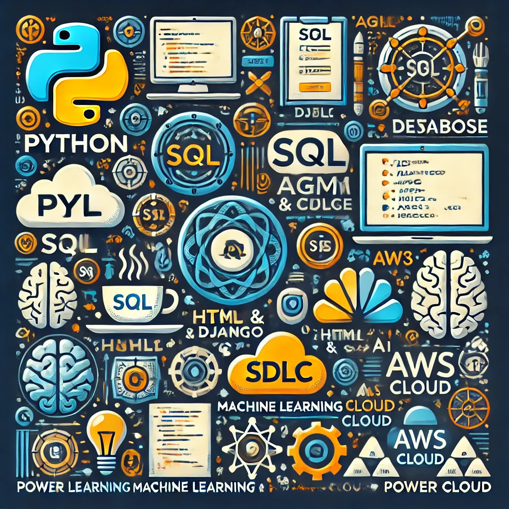

Skills:
Python
- Data Types, Methods, Conditional Statements, Functions
- OOP, Decorators, Generators, Recursion
- File Handling, Regex, Comprehensions, Lambda Functions
- Exception Handling
SQL
- DQL, DML, DDL, DCL, TCL Statements
- Joins, Subqueries, Correlated Subqueries, Triggers
- Strong proficiency in DQL functions
Django
- Project Setup, Virtual Environments, Settings Management
- Models, Migrations, ORM, Database Relationships
- Function-Based & Class-Based Views, Templates, Forms
- Authentication (Login, Logout, Registration, Access Control)
- Frontend Integration with HTML, CSS, JavaScript, React
HTML & CSS
- Semantic HTML, Forms, Tables, Accessibility
- CSS Selectors, Box Model, Flexbox, Grid
- Responsive Design with Media Queries
- Basic Animations, Transitions, Hover Effects
Machine Learning & AI
- Supervised, Unsupervised, and Semi-Supervised Learning
- Algorithms: Linear Regression, KNN, Random Cut Forest, K-Means, Confusion Matrix
- AWS Machine Learning (SageMaker, Rekognition, Comprehend)
- Statistics & Data Analysis for AI/ML
AWS Cloud
- Core Services (EC2, S3, RDS, Lambda, IAM)
- Security & Compliance (IAM Roles, Policies, Encryption)
- Networking (VPC, Route 53, CloudFront, Load Balancers)
- Cloud Practitioner Certified (Completed AWS Cloud Practitioner Course on Udemy)
Java
- Core Java (OOP, Exception Handling, Conditional Statements)
- Java Web Technologies (Servlets, JSP)
- Database Connectivity (JDBC)
Agile & SDLC
- Agile & Scrum (Sprint Planning, Scrum Ceremonies, Iterative Development)
- Kanban & Workflow Management (Continuous Delivery, Workflow Optimization)
- SDLC Workflow,Requirement Analysis
